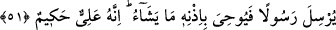

erkekliğine işâret vardır.
Emîr Hüsrev Dihlevî şöyle demiştir:
Altı ay dişi altı ay erkek olan çaylak kuşu gibi
Murdar dünya için daha ne kadar eziyet çekip çektireceksin.
et-Tevilatü’n-Necmiyye’de yapılan açıklamaya göre âyet şuna işâret etmektedir:
Kemâlât sâhibi olan meşâyihten velâyet sâhibi olan şeyhlere Allah sâdık, müttakî ve
sâlih müridler hibe eder. Bunlar kız evlâdlar mesâbesinde olup onların nikâh, evlilik
yahut başka bir yola girmek husûsunda başkaları üzerinde bir tasarrufları yoktur. Bazı
şeyhler sıddîk, sevgili, vâsıl, kâmil, müstekmil olup böylece ortaya çıkmışlardır ki,
bunlar tâlibler üzerinde tasarruf kâbiliyetine sâhib olduklarından erkek evlâdlar
mesabesindedir. Bazı şeyhlerin zikredilen her iki cinsten müridleri vardır ki bunlar,
başkalarında tasarruf edenler ve etmeyenler olarak iki sınıftırlar. Allah bazı şeyhleri de
akim yani kısır yapar da onların hiç müridi olmaz. Allah müridler üzerinde tasarruf
ettirecek ve ettirmeyecek olduğu şeyhleri bilir. Yine müridler üzerinde tasarruf
ettireceği ve ettirmeyeceği şeyhler üzerine gücü yeter.
Fakir (Bursevî) der ki: Şeyhler arasında ki bu farklılık, yalnız Allah’ın bildiği bir
hikmetten dolayı ya doğrudan şeyhlerle alâkalıdır yahut da yaşadıkları dönemin halkıyla
alâkalıdır. Bütün ümmetlerin farklı olmaları gibi zamanın insanları da farklı farklıdırlar.
İnsanda istidat ve kâbiliyet olmayınca, kâmil ve mükemmil şeyhler ne yapabilir ki?
Hâfız şöyle demiştir:
Hakk’ın feyzini kabul için temiz tabiatlı olmak gerekir,
Yoksa her taş ve topraktan inci ve mercan meydana gelmez.
51. Allah bir insanla ancak vahiy yoluyla veya perde arkasından konuşur, yahut
bir elçi gönderip izniyle ona dilediğini vahyeder. O yücedir, hakîmdir.
“Allah bir insanla ancak vahiy yoluyla veya perde arkasından” duyan konuşanı
görmeksizin Allah Teâlâ’nın bazı cisimlerde yarattığı kelâmını ona işittirmesiyle
“konuşur, yahut bir elçi” Cebrâil (a.s.)’ı veya herhangi bir melek “gönderip”
gönderilen bu elçi-melek, beşer olan elçi-peygambere Allah’ın “izniyle dilediğini
vahyeder. O,” yaratıkların sıfatlarından çok “yücedir,” Allah ile kullar arasında
iletişim ancak bu şekillerden biriyle sağlanır, “hakîmdir” işleri hep hikmet prensibi
üzere olur.